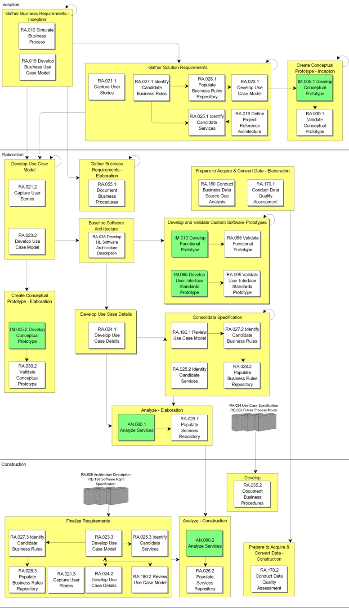

OUM |
Process Overview |
||
Method Navigation |
Current Page Navigation |
||
|
|
||||||||
In the Requirements Analysis process, the functional and supplemental requirements identified and prioritized during the Business Requirements process are analyzed further into a Use Case Model that is further refined by adding use case details in order to establish a more precise understanding of the requirements. The process of creating use cases helps ensure that the models and the associated system processes satisfy the business requirements. The Use Case Model is used as the basis for the solution development. This process helps provide structure and shape to the entire solution. The Use Case Model is used to document in detail the requirements of the system in a format that both the customer and the developers of the system can easily understand.
The Use Case Model is dynamic and is changed as the teams' understanding develops with the system. The resulting business requirement models are maintained throughout the project lifecycle as understanding of the requirements deepens.
The main work products or outputs of this process are the Use Case Model, a prototype of the user interface, and a high-level description of the software architecture. The work products from this process are used in data modeling and as a basis for system design.
 This process overview is written from the perspective of a Full Method View, utilizing ALL of the activities and tasks in this process. Therefore, all of the following sections provide comprehensive information. If your project is utilizing a tailored approach (for example, Technology Full Lifecycle View, Application Implementation View, Middleware Architecture View), not everything in this overview may be appropriate for your project. Please keep this in mind, especially when reviewing the Key Work Products and Tasks and Work Products sections. You should use OUM as a guideline for performing all types of information technology projects, but keep in mind that every project is different and that you need to adjust project activities according to each situation. Do not hesitate to add, remove, or rearrange tasks, but be sure to reflect these changes in your estimates and risk management planning. You should also consider the depth to which you address and complete each task based on the characteristics of your particular project or project increment. See Oracle's Full Lifecycle Method for Deploying Oracle-Based Business Solutions for further information on the scalability and adaptability of OUM.
This process overview is written from the perspective of a Full Method View, utilizing ALL of the activities and tasks in this process. Therefore, all of the following sections provide comprehensive information. If your project is utilizing a tailored approach (for example, Technology Full Lifecycle View, Application Implementation View, Middleware Architecture View), not everything in this overview may be appropriate for your project. Please keep this in mind, especially when reviewing the Key Work Products and Tasks and Work Products sections. You should use OUM as a guideline for performing all types of information technology projects, but keep in mind that every project is different and that you need to adjust project activities according to each situation. Do not hesitate to add, remove, or rearrange tasks, but be sure to reflect these changes in your estimates and risk management planning. You should also consider the depth to which you address and complete each task based on the characteristics of your particular project or project increment. See Oracle's Full Lifecycle Method for Deploying Oracle-Based Business Solutions for further information on the scalability and adaptability of OUM.
This process flow for this process follows:

Depending on your project (for example, large, complex, etc.), the project manager may designate a Requirements Analysis team leader and/or team leaders for various other reasons that the project manager deems necessary. If the project manager designates team leaders, they are responsible for leading their team and reviewing the work products produced by their team. The team leader plans, directs, and monitors the day-to-day work of the team. The team leader assigns work packages to the team members and makes sure they understand the requirements. The team leader is responsible for building team cohesion, motivating the teams, and providing assistance and encouragement to the team members. Each team leader performs the final quality control and quality assurance for the team by reviewing all work products. The team leader also signs off on team work completion and quality. Work that is not up to quality standards is returned. Team leaders review work products from other teams when these work products may impact aspects of the system. The team leader reports the team's progress to the project manager. Refer to Project Management in OUM for additional information on team leaders.
In the Requirements Analysis process, the requirements captured during the Business Requirements process are analyzed. In short, the requirements are refined and structured via a Use Case Model in order to establish a more precise understanding of the requirements. The Use Case Model is used as the basis for the solution development. This process helps provide structure and shape to the entire solution. Detailed Use Case Models are used to document the requirements of the system in order for the customer as well as the developers to more easily understand the system requirements.
The requirements are first formed into a Business Use Case Model (RA.015). In this model, the business processes are described in terms of business use cases and actors that correspond to the business processes and business roles, such as a customer. It shows the business from the usage perspective and shows how it provides value to the actors. The use cases that are relevant to the business are modeled, just enough to understand the context of the new system. The Domain Model (from the Business Requirements process) is often created in parallel with the Business Use Case model to model all the relevant business entities that relate to the Business Use Case Model. Most often this is done as part Business Requirements Workshop(s). This is an iterative process, and when reviewing the Business Use Case model, you may discover incompleteness or inconsistencies in the other models (Future Process Model RD.011), and therefore you may need to update these as a result.
The Business Use Case Model is further detailed into the Use Case Model (RA.023) where new actors and use cases are identified. Also here the workshop is a good technique to use. Go through each use case to identify the detailed use cases and actors, and thereafter provide the Use Case Specification (RA.024). Use the priorities given in the MoSCoW List (RD.045) to determine which use cases to go through first. When identifying the detailed use cases, each use case gets their own priority that will be used when defining the Use Case Specification (RA.024). While determining the Use Case Specification, new use cases may be identified that should be reflected in the Use Case Model. Therefore, these tasks are often done in parallel, and iteratively.
Further the use cases and scenarios that capture the new system's critical functionality are identified, reviewed and prioritized. A goal matrix is produced based on the Business and System Objectives (RD.001). This is all brought into the Architecture Description (RD.130) during Develop High-Level Software Architecture Description (RA.035).
Other important work products are the Validated Conceptual Prototype (RA.030), the Validated Functional Prototype (RA.085) and the Validated User Interface Standards Prototype (RA.095). These prototypes were produced in the Implementation process and are walked through with the users. Any feedback that results in either added/changed/refined requirements or changed priorities is recorded in an appropriate tool. The changes are then, depending on priorities, updated into the various requirement models.
Finally, a team with system analysts, ambassador users, designers, architects, and testers review the Use Case Model and Use Case Specifications (RA.180). As a result of such a review, new defects and change requests can be triggered.
Although interim outputs and diagrams are required for review purposes, ultimately, there is only one set of final work products from the process. The main work product of this process is the Use Case Model, a prototype of the user interface. Also during the process, the Architecture Description work product (RD.130) is updated by the Develop High-Level Software Architecture Description (RA.035) task.
*This process has Application Implementation supplemental process guidance.
This process has supplemental guidance that should be considered if you are doing an application implementation. Use the OUM Application Implementation Supplemental Guide to access all application implementation supplemental information. You can also go directly to the Requirements Analysis process supplemental guidance.
The tasks and work products for this process are as follows:
| ID | Task | Work Product |
|---|---|---|
Inception Phase |
||
RA.010 |
Simulate Business Process | Business Process Simulation |
RA.015 |
Develop Business Use Case Model | Business Use Case Model |
RA.019 |
Define Project Reference Architecture | Project Reference Architecture |
RA.021.1 |
Capture User Stories | User Story |
RA.023.1 |
Develop Use Case Model | Use Case Model |
RA.025.1 |
Identify Candidate Services | Service Portfolio - Candidate Services |
RA.027.1 |
Identify Candidate Business Rules | Candidate Business Rules |
RA.028.1 |
Populate Business Rules Repository | Populated Business Rules Repository |
RA.030.1 |
Validate Conceptual Prototype | Validated Conceptual Prototype |
Elaboration Phase |
||
RA.021.2 |
Capture User Stories | User Story |
RA.023.2 |
Develop Use Case Model | Use Case Model |
RA.024.1 |
Develop Use Case Details | Use Case Specification |
RA.025.2 |
Identify Candidate Services | Service Portfolio - Candidate Services |
RA.026.1 |
Populate Services Repository | Populated Services Repository |
RA.027.2 |
Identify Candidate Business Rules | Candidate Business Rules |
RA.028.2 |
Populate Business Rules Repository | Populated Business Rules Repository |
RA.030.2 |
Validate Conceptual Prototype | Validated Conceptual Prototype |
RA.035 |
Develop High-Level Software Architecture Description | Architecture Description |
RA.055.1 |
Document Business Procedures | Business Procedure Documentation |
RA.085 |
Validate Functional Prototype | Validated Functional Prototype |
RA.095 |
Validate User Interface Standards Prototype | Validated User Interface Standards Prototype |
RA.160 |
Conduct Business Data Source Gap Analysis | Business Data Source Gap Analysis |
RA.170.1 |
Conduct Data Quality Assessment | High-Level Data Quality Assessment |
RA.180.1 |
Review Use Case Model | Reviewed Use Case Model |
Construction Phase |
||
RA.021.3 |
Capture User Stories | User Story |
RA.023.3 |
Develop Use Case Model | Use Case Model |
RA.024.2 |
Develop Use Case Details | Use Case Specification |
RA.025.3 |
Identify Candidate Services | Service Portfolio - Candidate Services |
RA.026.2 |
Populate Services Repository | Populated Services Repository |
RA.027.3 |
Identify Candidate Business Rules | Candidate Business Rules |
RA.028.3 |
Populate Business Rules Repository | Populated Business Rules Repository |
RA.055.2 |
Document Business Procedures | Business Procedure Documentation |
RA.170.2 |
Conduct Data Quality Assessment | High-Level Data Quality Assessment |
RA.180.2 |
Review Use Case Model | Reviewed Use Case Model |
The objectives of the Requirements Analysis process are:
Refer to Key Work Products for a complete list of key work products in OUM.
The following roles are required to perform the tasks within this process:
| Role ID | Name | Responsibility |
|---|---|---|
Implementing Organization |
||
| BA | Business Analyst | Develop the business use cases. Facilitate the workshops where the business use cases are modeled. Define SOA Layering Architecture. Identify and document candidate business services. Identify and document candidate business rules. Populate the Business Rules Repository. Conduct working sessions. Gather and document the procedures supporting the business processes enabled by the system. |
| DV | Developer | Prepare for, and walkthrough the Conceptual Prototype, and gather new understanding of requirements. Prepare the Conceptual Prototype Workshop, invite participants, and lead the workshop. Provide expertise on development tools and how they are to be used. Walk the user through the Functional Prototype. Optionally, the developer records agreed changes and additions that can be reviewed after the walkthrough. You may choose to use an additional lead application developer to lead the Validate Functional Prototype Walkthrough Workshop. Assist in presenting the User Interface Standards Prototype. Optionally, develop a custom report to present the information during or after the walkthrough. Lead the Validate User Interface Standards Prototype Walkthrough. Lead the Use Case Model Walkthrough. Present the Use Case Model and Use Case Specifications. |
| QM | Quality Manager | Review the Use Case Model and Use Case Specifications from the point of view of the Testing process. Gain understanding of the internal structure of the application. |
| SAN | System Analyst | Develop the Use Case Model and use cases. Facilitate the workshops where the use cases are modeled. Detail the use cases. Participate in Conceptual Prototype Workshop to ensure that it fits within the overall architecture (as far as known). Assist in the prioritization based on the documented business goals of the project. Assist in the validation of the Functional Prototype and advise on the impact of proposed changes on the requirements. Assist in the validation of the User Interface Standards Prototype and advise on the impact of proposed changes. Participate in the review meeting in order to verify if the Use Case Model and Use Case Specifications realize the requirements. |
| SA | System Architect | Define SOA Layering Architecture. Identify and document candidate business services. Decide on, define, format and populate the services repository. Develop Architecture Description by prioritizing the use cases based on architecture risks and documented business goals of the project. Provide input and advice on the architectural consequences of particular gaps and alternatives. Assist in validating that the standard reports and forms, provided with the functionality being implemented, support the implementing organization’s requirements. Participate in the review meeting to verify if the Use Case Model and Use Case Specifications are compatible with the architecture. |
| SA (IA) | System Architect (Information Architect) | Identify any gaps in the source systems for meeting the information requirements of the target system. Identify information (data) quality issues early in the development cycle and establish appropriate escalation and resolution of those issues. Preferably, this should be done by a system architect that specializes in Information Architecture. |
Customer (User) |
||
| KEY | Ambassador User | Provide information to create the business use cases and use cases and add detail to the use cases. Participate in the Conceptual Prototype Workshop to ensure that the requirements have been properly prototyped. Provide assistance in prioritizing the uses cases, goals and business units. Participate in working sessions and help identify setup parameters. Examine the Functional Prototype and give feedback to the developers. Provide information on the organization’s reporting requirements. Examine the User Interface Standards Prototype and give feedback to the developers. Provide assistance in Identifying data quality issues early in the development cycle and establish appropriate escalation and resolution of those issues. |
| CDA | Customer Data Administrator | Provide assistance in Identifying any gaps in the source systems for meeting the information requirements of the target system. Provide assistance in Identifying data quality issues early in the development cycle and establish appropriate escalation and resolution of those issues. |
The critical success factors of the Business Requirements process also apply to the Requirements Analysis process. Additional critical success factors are:

Copyright © 2006, 2016, Oracle and/or its affiliates. All rights reserved.